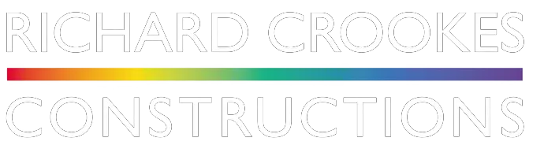
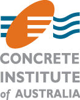
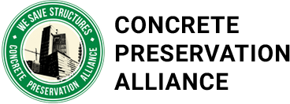
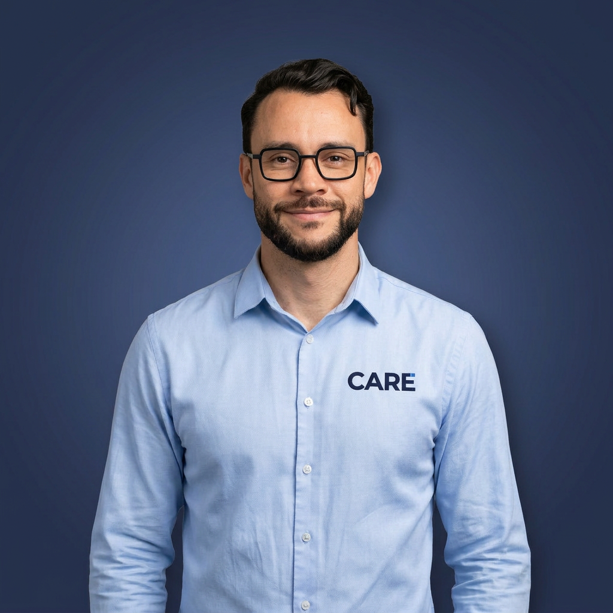

01
01
Scanning, Coring, Cutting & Preparation
GPR scanning, diamond coring, cutting and preparation for projects where the structure, services and access constraints need to be understood first.
View service
Engineering knowledge on the tools.
CARE supports builders, remedial contractors and engineers with practical site capability across concrete scanning, coring, cutting, surface preparation, repair and corrosion rehabilitation.
Services
CARE brings the practical trades, supervision and documentation needed to move concrete and corrosion work from investigation to close-out.
01
GPR scanning, diamond coring, cutting and preparation for projects where the structure, services and access constraints need to be understood first.
View service 02
02
Concrete repair and corrosion remediation delivered to specification, with the crew, materials and records coordinated around the repair method.
View service 03
03
Core extraction and sampling for testing, compliance and investigation, completed cleanly and aligned with the engineer's brief.
View serviceAbout
CARE helps extend the service life of existing buildings as a practical act of sustainability.
CARE is a specialist concrete and corrosion rehabilitation contractor delivering practical, site-based services for repair, remediation and construction projects. We support builders, remedial contractors and specialist subcontractors with concrete scanning, coring, cutting, surface preparation and repair works, delivered with technical understanding and disciplined execution.
Our value is simple: engineering knowledge on the tools, backed by safe work planning, QA discipline and clear close-out records.
How CARE controls the work
Concrete repair work fails when site conditions, access, materials and documentation are treated as separate problems. CARE plans the work as one controlled sequence, from scan and set-out through to inspection records.
Safety and compliance are built into the job from the outset, not added after the work starts.
Locate reinforcement, post-tension cables and embedded services before cutting, coring or breakout begins.
SWMS, silica controls, access planning and housekeeping are matched to the actual site conditions.
Hold points, photos and inspection records are captured at the stages that matter to the repair.
ITPs, product records and completion evidence are organised for builder and engineer review.
Case studies
Our project write-ups show the conditions, method, controls and documentation behind CARE's work on site.

Four 127mm penetrations through a bondek roof slab above active plant, delivered with zero water ingress and no facility disruption.
Read case study
47 linear metres of basement crack injection using Sikadur 52 LV, with daily records and full ITP documentation.
Read case studyProject relationships
CARE works alongside principal contractors, remedial builders and specialist project teams where site control, documentation and reliable execution are essential.

Industry alignment
CARE maintains links with industry bodies across corrosion, concrete repair and preservation. This keeps our work grounded in current practice, practical standards and the expectations of engineers and builders.


Our Team
CARE is led by people who know that good remediation is planned in the office but proven on site. The team combines construction experience, technical awareness and a disciplined approach to delivery.
With extensive experience across concrete repair, corrosion rehabilitation and structural remediation projects, Rod leads CARE with a focus on quality execution, safety discipline and practical site delivery.
LinkedIn
DirectorWith over 15 years in the Australian construction industry, Tiago brings deep operational knowledge and a strong network of builders and contractors. He drives CARE's commercial strategy and on-site execution standards.
LinkedInContact us
CARE is equipped to deliver both small and large concrete repair and rehabilitation packages across Sydney and NSW.
Send the drawings, photos or scope notes you have. We will review the constraints and respond with the next practical step.